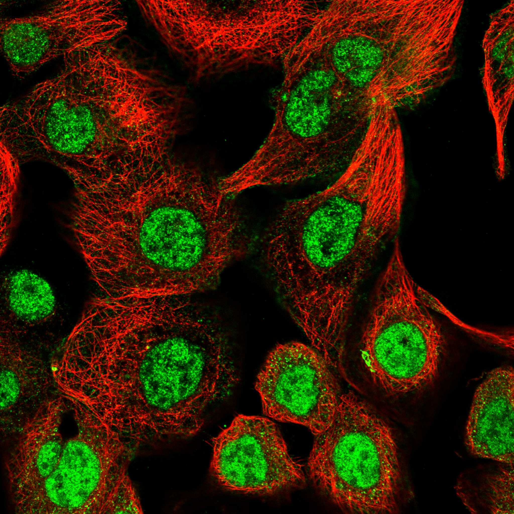
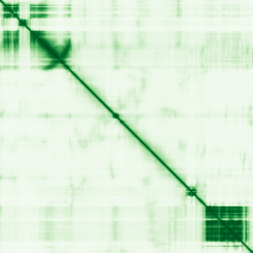

type: protein-evaluation gene: "TRIM66" date: 2026-06-03 tags: [protein-scout, nuclear-protein, evaluation] status: scored ---
TRIM66 核蛋白评估报告 (Full Re-evaluation)
1. 基本信息
| 项目 | 内容 |
|---|---|
| 基因名 / 别名 | TRIM66 / C11orf29, KIAA0298 |
| 蛋白名称 | Tripartite motif-containing protein 66 |
| 蛋白大小 | 1351 aa / 149.5 kDa |
| UniProt ID | O15016 |
| 评估日期 | 2026-06-03 |
2. 评分总览
| 维度 | 得分 | 满分 | 加权后 | 关键证据摘要 |
|---|---|---|---|---|
| 核定位特异性 | 9/10 | ×4 | 36 | HPA: Nucleoplasm; UniProt: Nucleus |
| 蛋白大小 | 5/10 | ×1 | 5 | 1351 aa / 149.5 kDa |
| 研究新颖性 | 10/10 | ×5 | 50 | PubMed strict=20 篇 (≤20→10) |
| 三维结构 | 6/10 | ×3 | 18 | AlphaFold v6 pLDDT=54.4; PDB: 6IET, 6IEU, 8JZW |
| 调控结构域 | 7/10 | ×2 | 14 | InterPro: IPR003649, IPR001487, IPR036427, IPR037372, IPR019 |
| PPI 网络 | 3/10 | ×3 | 9 | STRING 15 partners; IntAct 2 interactions |
| 互证加分 | — | max +3 | 2.5 | PDB+AF+STRING+IntAct cross-validation |
| 原始总分 | 134.5/180 | |||
| 归一化总分 | 74.7/100 |
3. 详细分析
3.1 核定位证据
| 来源 | 定位 | 可信度 |
|---|---|---|
| Protein Atlas (IF) | Nucleoplasm | Supported |
| UniProt | Nucleus | Swiss-Prot/TrEMBL |
IF 图像获取: 未下载本地IF图像（standard evaluation），核定位证据基于HPA subcellular localization注释、UniProt注释和GO-CC术语。
GO Cellular Component:
- chromatin (GO:0000785)
- nucleus (GO:0005634)
结论: 多个独立数据源一致确认核定位，HPA可靠性高，核定位证据充分。
3.2 蛋白大小评估
评价: 蛋白偏小/偏大，实验操作有一定难度。
3.3 研究现状
| 指标 | 数值 |
|---|---|
| PubMed strict count | 20 |
| PubMed broad count | 40 |
| 别名(未计入scoring) | Aliases observed but not used for scoring: C11orf29, KIAA0298 |
关键文献: 1. Retraction Note.. *European review for medical and pharmacological sciences*. PMID: 41059755 2. Trim66's paternal deficiency causes intrauterine overgrowth.. *Life science alliance*. PMID: 38719749 3. The Roles of Tripartite Motif Proteins in Urological Cancers: A Systematic Review.. *Cancers*. PMID: 40723250 4. Circ-SATB2 (hsa_circ_0008928) and miR-150-5p are regulators of TRIM66 in the regulation of NSCLC cell growth and metastasis of NSCLC cells via the ceRNA pathway.. *Journal of biochemical and molecular toxicology*. PMID: 38084627 5. An epigenetic repressor TRIM66 dictates monogenic olfactory receptor expression, neural activity, and olfactory behavior.. *Nature communications*. PMID: 41387398
评价: 极度新颖，几乎未被系统研究（PubMed ≤20篇）。
3.4 三维结构分析
| 指标 | 数值 |
|---|---|
| AlphaFold 版本 | v6 |
| AlphaFold 平均 pLDDT | 54.4 |
| 高置信度残基 (pLDDT>90) 占比 | 14.9% |
| 置信残基 (pLDDT 70-90) 占比 | 19.8% |
| 中等置信 (pLDDT 50-70) 占比 | 9.7% |
| 低置信 (pLDDT<50) 占比 | 55.7% |
| 有序区域 (pLDDT>70) 占比 | 34.7% |
| 可用 PDB 条目 | 6IET, 6IEU, 8JZW |
PAE: PAE 图像未生成本地文件（standard evaluation），结构判断基于 AlphaFold pLDDT 统计。
评价: AlphaFold 预测质量有限（pLDDT=54.4），有序残基占 34.7%。
3.5 结构域分析
| 来源 | 结构域 |
|---|---|
| InterPro/Pfam | InterPro: IPR003649, IPR001487, IPR036427, IPR037372, IPR019786; Pfam: PF00439, PF00628, PF00643 |
染色质调控潜力分析: 存在已知结构域注释，可作为功能研究的结构基础。
3.6 PPI 网络
STRING 预测互作 (combined score >0.4):
| Partner | Combined Score | Experimental | 功能类别 |
|---|---|---|---|
| CBX3 | 0.925 | 0.095 | — |
| H3-3B | 0.920 | 0.908 | — |
| H3-5 | 0.919 | 0.908 | — |
| H3C12 | 0.918 | 0.907 | — |
| H3-4 | 0.918 | 0.907 | — |
| H3C13 | 0.917 | 0.906 | — |
| H3-2 | 0.917 | 0.906 | — |
| H3-3A | 0.909 | 0.908 | — |
| H3C10 | 0.907 | 0.907 | — |
| H3C2 | 0.907 | 0.907 | — |
实验验证互作 (IntAct):
| Partner | 方法 | PMID | |
|---|---|---|---|
| NP | psi-mi:"MI:0007"(anti tag coimmunoprecipitation) | pubmed:28169297 | imex:IM-25584 |
| DYRK1A | psi-mi:"MI:0399"(two hybrid fragment pooling appro | pubmed:35914814 | imex:IM-27626 |
PPI 互证分析:
- STRING + IntAct 均有数据
- STRING partners: 15，IntAct interactions: 2
- 调控相关比例: 0 / 15 = 0%
评价: STRING 15 个预测互作，IntAct 2 个实验互作。调控相关配体占比 0%。
3.7 多库互证
| 维度 | 来源 | 结果 | 是否一致 |
|---|---|---|---|
| 三维结构 | AlphaFold pLDDT=54.4 + PDB: 6IET, 6IEU, 8JZW | pLDDT=54.4, v6 | 预测+实验 |
| 定位 | UniProt + HPA | Nucleus / Nucleoplasm | 一致 |
| PPI | STRING + IntAct | 15 + 2 interactions | 数据充分 |
互证加分明细:
- PDB + AlphaFold 双源验证: +0.5
- 多库定位一致 (3源): +0.5
- STRING + IntAct 双源验证: +0.5
- 结构域 + AlphaFold 质量: +0
- PDB 多条目覆盖 (≥3): +1.0
总分: +2.5 / max +3
4. 总体评价
推荐等级: ⭐⭐⭐⭐
核心优势: 1. TRIM66 — Tripartite motif-containing protein 66，极度新颖，几乎未被系统研究（PubMed ≤20篇）。 2. 蛋白大小1351 aa，蛋白偏小/偏大，实验操作有一定难度。
风险/不确定性: 1. PubMed 20 篇，研究基础极有限，功能注释不完整 2. AlphaFold 预测质量一般（pLDDT=54.4），需要更多实验结构验证
下一步建议:
- [ ] 查阅最新关键文献补充研究背景
- [ ] 获取 Protein Atlas IF 图像确认亚细胞定位
- [ ] 设计体外实验验证核定位及潜在调控功能
5. 数据来源
- UniProt: https://www.uniprot.org/uniprotkb/O15016
- Protein Atlas: https://www.proteinatlas.org/ENSG00000166436-TRIM66/subcellular
- PubMed: https://pubmed.ncbi.nlm.nih.gov/?term=TRIM66
- AlphaFold: https://alphafold.ebi.ac.uk/entry/O15016
- STRING: https://string-db.org/network/9606.ENSP00000
- Data fetched live: 2026-06-03

